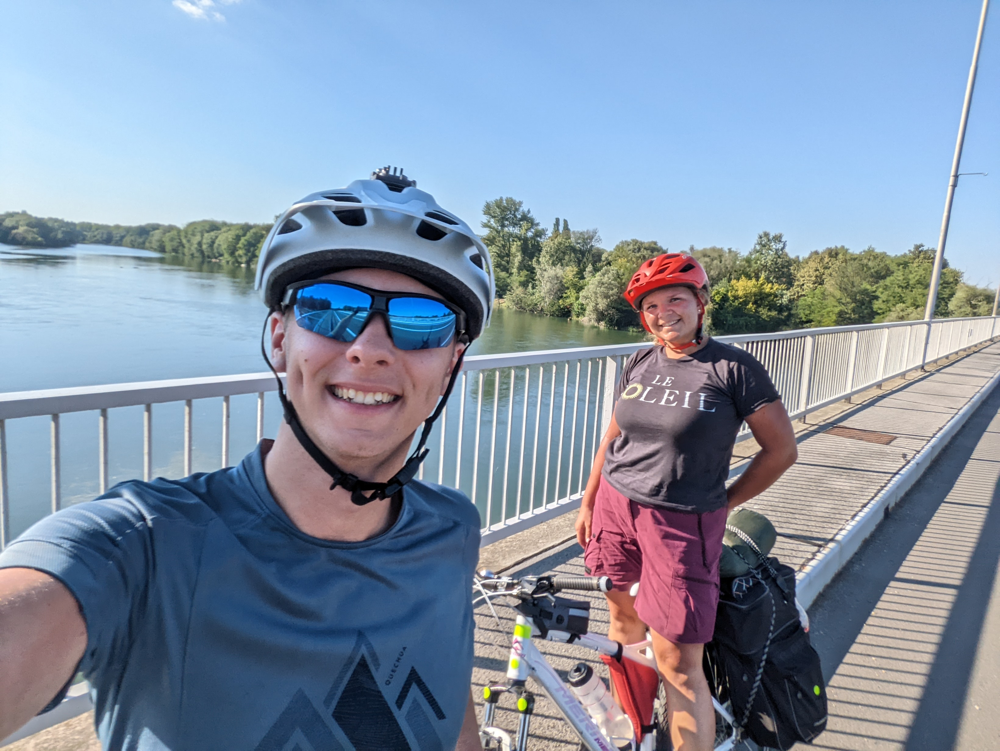
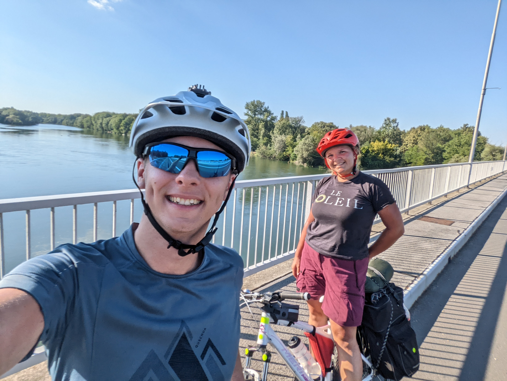

Prekročenie Hraníc
Keszthély -> Varaždin (115km)
Keszthély -> Varaždin (115km)
Varaždin. Prvé chorvátske mesto, kde sa zastavíme na noc. 120 kilometrov v prvotriednom teple, na slnku bez jediného lesíka či zastávky pri jazere. No nemôžeme otáľať, zajtra bude ešte teplejšie. Musíme byť do večera minimálne za maďarsko-chorvátskymi hranicami. Vstali sme teda skoro ráno, pobalili stan, pripravili sa na naše putovanie a opustili kemping. Naraňajkovali sme sa v pekárni, minuli posledné forinty a už nás nič nedržalo, aby sme ostávali na tomto mieste. Zabrali sme plnou parou vpred a už sme sa valili. Cestou sme prechádzali cez balatonský národný park, kde sme sa zastavili pri vykopávkach niekdajšieho kostola postavenom a vysvätenom ešte za čias Pribinu a pri pamätníku na Blatnohradské kniežatstvo, následne sme už len napredovali po maďarskom vidieku. Míňali kukuričné polia a sady s jablkami, nedočkavo sme očakávali, kedy začneme vídať autá s chorvátskymi značkami. Po minutí mesta Letenye sa tak aj stalo, čoraz viac chorvátskych áut nás začalo míňať a nikdy sme neboli hádam takí radi za pohľad na ostnatý drôt ako dnes. Prešli sme cez maďarskú stranu hraníc a keď sme započuli to krásne ,,Kamo ideš Matuš?" Srdce nám zaplesalo, konečne sme medzi svojimi. Priznám sa, sprvu som zostal prekvapený, obrátil som sa na Paťku a bezducho sa jej opýtal: ,,Kam ideme?" Ešte že ona si zachovala chladnú hlavu a promptne odpovedala do Zagrebu. Pán pohraničník sa na pol pobavene, na pol trochu otrávene zasmial, vrátil nám doklady a vpustil nás do krajiny. Chorvátsko, tak sme teda tu. Nechcelo sa nám veriť, že sme to už tak ďaleko zvládli. Bol čas na vydýchnutie a tak sme sa schovali pred slnkom do tieňa pohraničnej pumpy, kúpil som Paťke kávu a rozhodovali sme sa, či to dnes potiahnuť skutočne do toho Zagrebu alebo sa uskromniť a nechať to na 60km vzdialený Varaždin. Nakoniec sme našli pomerne lacné a pekné ubytovanie vo Varaždine a rozhodnutie bolo na svete. Varaždin priprav sa, už ideme. Hneď sme zistili, že Chorváti na rozdiel od Maďarov pochopili, ako majú vyzerať cyklotrasy, a tak sme takmer až po Varaždin išli po vyvýšenej plošine pozdĺž cesty, označenej modrobielou značkou cyklistu. Umorení a strašne radi, že sme to už dotiahli až sem. Ubytovali sme sa, zmyli zo seba soľ a prach z celého dňa a klasicky vyrazili do mesta objavovať krásy historických budov a miestnej kuchyne, prebehol som sa po celom meste hľadajúc bankomat, keď si Paťka objednala v reštaurácii palacinky a nedalo sa platiť kartou. Preplatil som vytiahnutie hotovosti o 8 euro a dopotený konečne zaplatil. Prešli sme sa po nočných hradbách Varaždinskeho hradu a sledovali jagajúce sa hviezdy a sliepnajúce svetielka nočného mesta. Varaždin je skutočne krásne mesto na život a sme veľmi radi, že sme ho mohli zažiť na vlastnú kožu, i keď iba na večer. Raz sa isto vrátime.


 
